Стойки с круглым основанием всегда практичнее, чем стойка с тремя ножками. За ножки можно спотыкаться, на ножки может наступить человек и просто сножку смять. Круглое основание - это маст хев. Проблема только одна - стойки с круглым основанием обычно дороже чем треноги.
На 2025 год купить вертикальную стойку с круглым основанием (без перекладины "журавль") можно минимум за 5 000 руб. самый дешман типа NordFolk/AuraSonics у самого недорогого продавца на OZON. А если будет "журавль", то цена начинается от 14 000 руб.
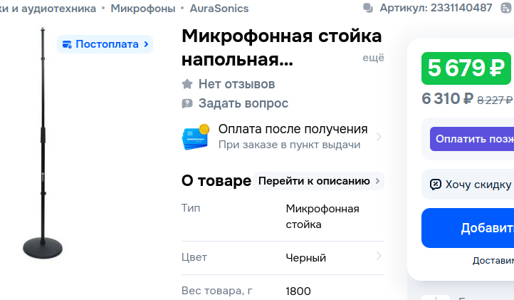
Для самодельщика-любителя это недопустимая цена за тяжелый блинчик и телескопическую палочку. А можно ли что-то подобное сделать из готовых узлов?
Здесь собирается информация о том, что можно использовать для самостоятельной сборки.
Держатель стойки
Первое - фиксатор стойки. Для него можно взять "Держатель-колышек для садового зонта 43см" в магазине Максидом за 249 руб.
Сделан он из чудовищно крепкого пластика, устойчивого к ультрафиолету, и должен удерживать дачный зонт от порывов ветра. Для наших нагрузок эта штука подойдет. На нем снимаются черные ручки и отпиливается нижний конусный винт. Получившееся плоское основание имеет диаметр 10 см. Сам фиксатор может зажимать трубу от 23-24 мм в диаметре.
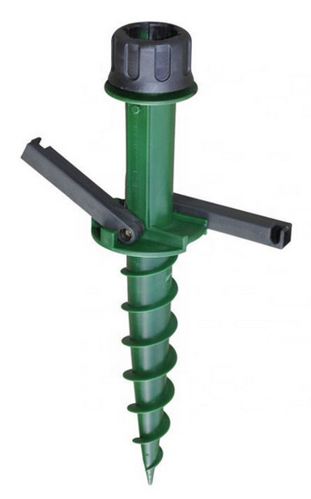
Итак, получился цельнолитой узел из блинчика, вертикальной трубки и фиксатора наверху. В блинчике, в двух местах, где он будет прижиматься к основанию, просвертиваются отверстия под винты. Почему отверстий всего два? А больше и не надо. Я посмотрел как сделаны другие держатели, и держатель для более крупного зонта прикручивается к основанию вообще одним центральным винтом на 6-8 мм. Этот держатель был металлический, сама вертикальная трубка держателя имеет диаметр 5 см. Нижняя часть заглушена сваркой и в центре сделано отверстие, куда вставляется один-единственный винт. И все. Так что фиксация на двух винтах блинчика диаметром 10 см - это более чем крепкое соединение.
Основание
Основание должно быть тяжелым, чтобы стойка хороши стояла. У оригинальных стоек диаметр блина - 25...32 см, а вес блина около 3,8 кг.
Что можно взять готовое? В том же Максидоме есть "Столешница круглая хв/п 28х380мм сорт АВ" за 540 руб. Да, она чуть больше в диаметре, зато будет чуть более устойчивой. Вес указан в 2 кг. Но это же дерево, с ним достаточно просто работать, а вес можно и нарастить.
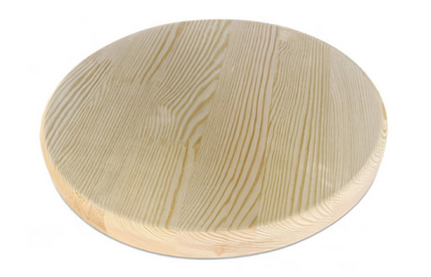
Основание можно сделать наборным, то есть добавить еще один слой. Слой можно добавлять и из ДСП (удельный вес больше) и из фанеры, и из всего что есть под рукой. Можно стамесочкой выдолбить снизу блина ниши (этот блин ведь толщиной почти 3 см), и уложить туда металлические вставки или свинцовую дробь насыпать по вкусу, и закрыть блинчиком из фанеры толщиной 3...4 мм.
А можно вообще ничего не добавлять, и проверить устойчивость по факту изготовления, ведь размер блина несколько больше оригинала.
Штанга
Штанга делается из телескопического карниза для ванн, который держит в ванне шторку. Длинны 2 метра в разложенном виде хватит за глаза. Лучше брать с поворотным фиксатором, хотя и с внутренней пружиной тоже можно, но будет неудобно: стойка будет только увеличивать высоту, а чтобы уменьшить, надо будет открутить держатель микрофона, вытащить штангу из основания, вытащить верхнюю трубку из нижней и вставить в нижнюю с обратной стороны (это стандартное решение, если при установке корниза случайно вытянули штангу больше, чем позволяет рассточение между стен).
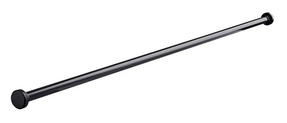
Если у штанги (корниза) есть поворотный механизм, то в инструкции должно быть написано примерно следующее:
Штанга предусматривает быструю и надежную установку. Поворот против часовой стрелки разблокирует механизм и позволяет регулировать длину. Поворот по часовой стрелки жестко блокирует механизм и позволяет установить штангу враспор.
Главное, при покупке корниза проверить диаметр толстой трубки. Он должен быть 25 мм, чтобы трубка фиксировалась в держателе. Бывает, что диаметр толстой трубки всего 22 мм, и такой корниз не подойдет, он слишком тонкий. Заявленная рабочая длинна корниза должна быть 110...200 см или 115...220 см, в этих пределах. Стоит корниз ~750 руб.
После покупки с корниза снимаются боковые заглушки, и штанга готова к установке.
Держатель микрофона
Держатель микрофона можно купить на OZON за ~350 руб. Основной вопрос - как его прикрепить к штанге. Тут каждый извращается как может. Можно в заглушке штанги просверлить отверстие в центре и вкрутить в него болт, подходящий под резьбу держателя микрофона. Но это будет не очень надежно: стенки заглушки достаточно мягкие и хрупкие.
Чтобы было надежно, делается так: берется длинный болт (~80 мм длинной) и две гайки. Гайка наворачивается на болт так, чтобы оставалась резьба на шайбу, толщину пластмассовой стенки заглушки, еще шайбу, прижимной болт, и торчала резьба для держателя. С обеих сторон пластмассы заглушки накидываются шайбы, и накручивается прижимной болт. Основная идея в том, чтобы головка болта после установки была глубоко в трубке. И желательно чтобы головка болта была диаметром чуть меньше внутреннего диаметра трубки, чтобы ничего не болталось. Если головка болта существенно меньше внутреннего диаметра, надо подобрать подходящую шайбу (или из любого пластмассового обрезка сделать шайбу нужного диаметра). И подтянуть эту шайбу дополнительной гайкой к головке болта.
Внимание! Винт, на который накручивается держатель микрофона, должен быть с дюймовой резьбой 3/8". Это не обычный метрический винт! У него собый шаг резьбы с дюймовым модулем. Гайка тоже должна быть соответсвующая.
Все, заглушка затыкается на конец трубы, и можно прикручивать микрофонный держатель. Если нужно, чтобы заглушка не проворачивалась и не выпадала, можно сбоку штанги просверлить отверстие и вкрутить небольшой винт или саморез.
* * *
Можно делать и без использовния пластиковых заглушек. Вот надежный вариант из металлических частей. Для него понадобится:
На следующих фото показана вся конструкция оконечника.
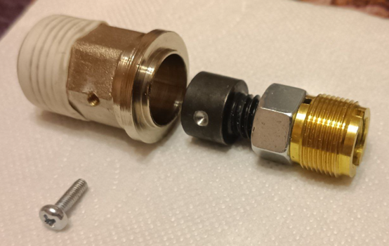
Слева - направо:
Внутренний проходной диаметр проставки счетчика - 15 мм. Головка дюймового болта немного меньше этого диаметра. Чтобы она не болталась, ее тоже надо посадить в термоусадку:
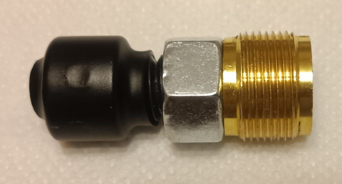
Термоусадку на месте углубления стопорного винта стоит удалить, чтобы четко найти нужное положение при сборке. И вот сборка всего узла, перед тем как дюймовый винт установлен в свое положение:
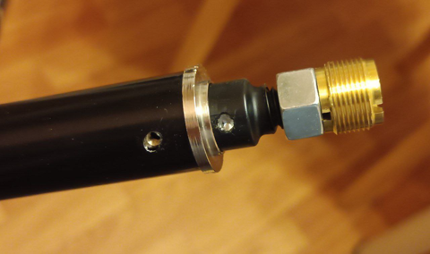
Дюймовый винт задвигается вовнутрь, и вкручивается маленький винтик для фиксации. Большая дюймовая гайка тоже подтягивается, и весь узел становится хорошо закрепленным. Для надежности можно ставить на разъемный фиксатор резбы, использовать прижимные шайбы и т. д.
Далее показана разметка основания с верхней стороны. Торчат винты, к которым прикручивается держатель стойки. В центре сверлом Форстнера сделано углубление на 5 - 10 мм с диаметром 26 мм.
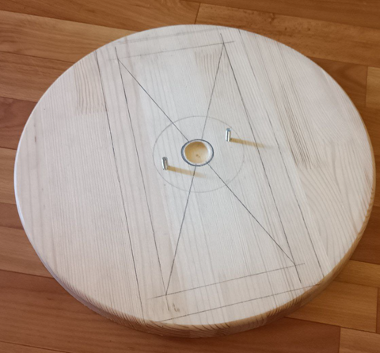
В основании с нижней стороны, тем же сверлом, сделаны углубления, чтобы шляпки винтов были заподлицо. Винты - обычные мебельные с квадратом под шляпкой, предотвращающим вращение винта при затягивании.
Итоговый результат:
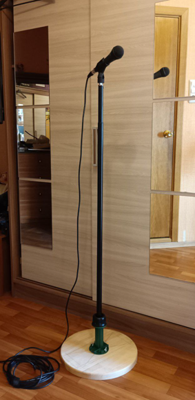
Дальше нижние детали красятся в нужный цвет и стойка готова.
Проблемы
Идеальных вещей не существует. Что можно отметить как проблему этой самодельной стойки? Оказалось, что фиксатор трубы на держателе стойки (это такая большая пластиковая гайка сверху держателя, с внутреннеми лепестками), не очень надежная. Она сделана из хорошего пластика, лепестки жесткие, но вот место стыка лепестка и этой большой гайки - очень тонкое. Лепестки держатся на тоненькой перемычке. Причем у некоторых лепестков эта перемычка жесткая о они держатся крепко, а у некоторых - она "подламывается", и лепесток болтается на тоненькой пластиковой перемычке. Например, всего лепестков весемь, а после первой затяжки болтаться начинают два. Они, в принципе, работают, трубу держат, но вот такое их состояние доверия не вызывает. А на что можно было расчитывать за 249 руб?
Ну и как следствие, гладкая трубка в этом фиксаторе может немного туго, но проскальзывать вверх, например когда переставляешь стойку. И тогда нижный край трубки вытаскивается из углубления в деревянном основании, и трубка начинает болтаться, пока ее не "продавишь" вниз на место. Эту проблему можно решить, установив кольцо со стопорным винтиком сразу под тем местом, где лепестки облегают трубку. В качестве такого кольца можно даже использовать держатель трубы на 25 мм:
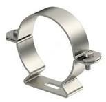 или 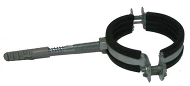
Стопорный винт не обязателен, но желателен, надо смотреть наколько крепко этот держатель держится на стойке.
Или можно в этом месте установить небольшой кусок пластиковой трубы с ДУ 25 и обжать хомутом от шланга (трубку можно разрезать чтобы она была буквой С для хорошего стягивания).
В любом случае, этот стопор будет внутри конструкции, и никак не повлияет на внешний вид.
Стоимость всей затеи
Итого 2050 руб., что более чем в два раза меньше чем покупать готовое. Плата за это - ваше время и неказистый внешний вид изделия. Хотя, если покрасить в радикально черный цвет, то мало кто издалека догадается что это самодельная вещь.
Если же у вас уже есть часть деталей, например держатель микрофона часто идет с самим микрофоном, или старая штанга после ремонта в ванной стоит зачем-то на балконе, то этот бюджетный вариант выглядит достаточно разумно.
Кстати, в крупных городах есть такая вещь как прокат. Для разовых акций, возможно, имеет смысл арендовать вертикальную стойку на день за 1000 - 1400 руб. Аренда стойки с журавлем несколько дороже: 1500 - 2000 руб. в сутки. А эта сумма уже равна стоимости самодельной стойки. В общем, покупать, арендовать или делать стойку - каждый решает индивидуально для себя, все варианты имеют свои минусы и плюсы.
Всем самодельщикам удачи!